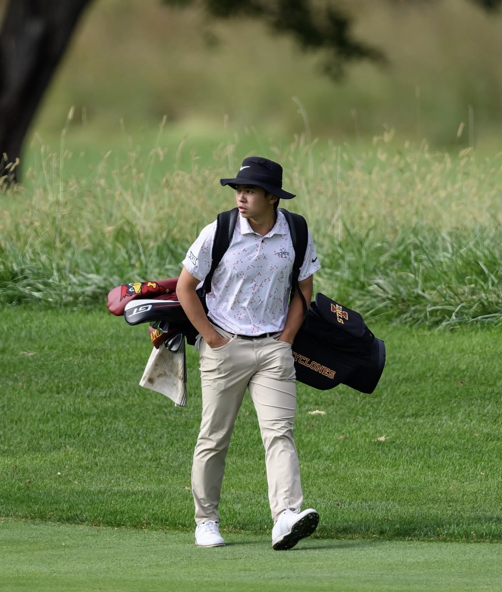

Golf · Iowa State University
Fifteen Years in the Game
I began playing golf at the age of seven. My father, who has always loved the game, first introduced me to it with a simple belief: golf teaches persistence, reflection, and the discipline to keep improving after failure.

Golf has stayed with me for more than fifteen years, from elementary school in China to NCAA Division I competition in the United States. Along the way, I competed at increasingly higher levels, joined the Chinese Men’s National Team in 2020, and came to Iowa State University in 2023 to compete in NCAA Division I golf.
Throughout this journey, I have tried to honor the word student in student-athlete. Academics have always come first, while competitive golf has taught me how to manage time, work patiently toward long-term goals, and remain curious about why things succeed or fail.
The journey
From China to NCAA Division I
-
2011
Started playing golf at age seven.
-
2020
Selected to the Chinese Men’s National Team.
-
2021
Finished T14 at the Volvo China Open.
-
2023
Joined Iowa State Men’s Golf and began competing in NCAA Division I.
-
2026
Advanced through U.S. Open Local Qualifying and earned my first NCAA Division I Top-10 finish.


Selected finishes
Competitive Results
NCAA
Big 12 Championship 32nd The Bearcat Invitational 8thHigh-Level Amateur
Saguaro Amateur 4th Grapevine Amateur 3rd Iowa Amateur Championship 6thProfessional
Volvo China Open · 2021 T14Student-athlete
A Practice of Revising
Competitive golf has given me thousands of opportunities to make a decision, observe an outcome, and revise my approach.
A bad round cannot be undone. A good round guarantees nothing about tomorrow. Progress comes from extracting useful information from both, then returning to the work.
The same mindset shapes the way I approach mathematics: stay patient with difficult problems, question failed approaches, use what I have learned, and keep going long enough to understand the structure underneath.

Where it began
Golf began as something I shared with my father.
Fifteen years later, it remains one of the most important parts of my life. I expect it always will be.